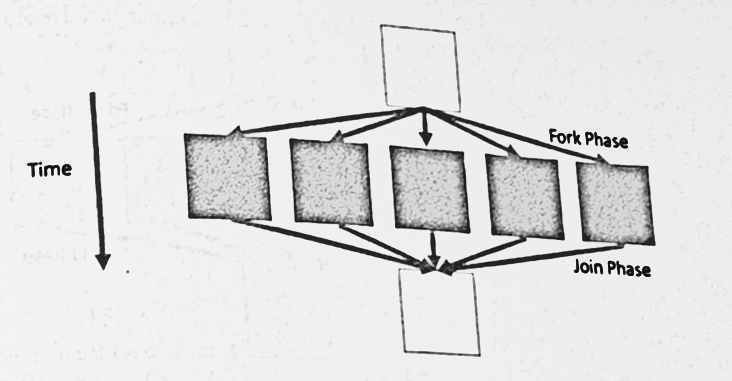
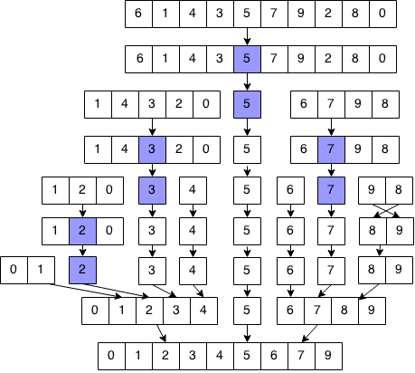
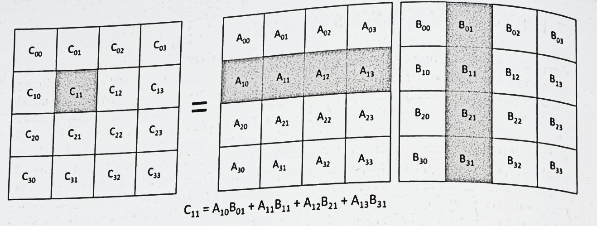
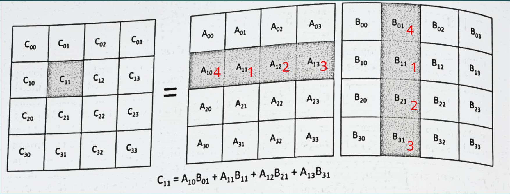
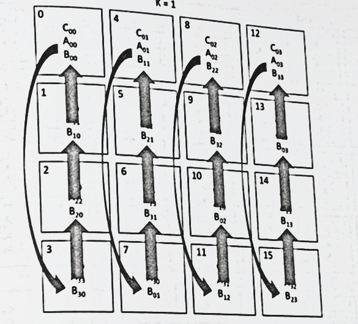
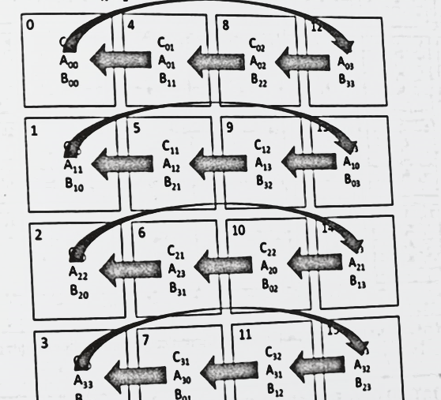

Veljko Petrović
Decembar, 2022
| Klasa | Primer |
|---|---|
| Fork/join | Paralelni for |
| Zavadi pa vladaj | FFT, paralelno sortiranje |
| Halo zamena | Sistemi konačnih elemenata/razlika |
| Permutacije | Kanonov algoritam |
| Sramotno paralelna | Monte Karlo |
| Menadžer/radnik | Aktivno meš rafiniranje |
| Zadaci protoka podataka | Pretraga po širini |


\[ \frac{f_i^{n+1} - f_i^{n}}{dt} = -v\frac{f_{i+1}^n - f_i^{n}}{dx} \]
\[ f_i^{n+1} = f_i^{n} -v\frac{dt}{dx}\frac{f_{i+1}^n - f_i^{n}}{dx} \]

| Proračun | Korak |
|---|---|
| \(A_{10}B_{01}\) | 3 |
| \(A_{11}B_{11}\) | 0 |
| \(A_{12}B_{21}\) | 1 |
| \(A_{13}B_{31}\) | 2 |


